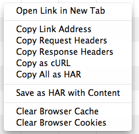

1.2 Chrome developer tools
Browser developer tools.
Browser developer tools are the one of the most important additions to our development workflow in recent years.
1.2.1 Overview
The developer tools network panel visualises the networking waterfall of the current page in real-time as requests are made. It then allows to inspect and drill-down into the metrics of each request in detail.
You can open the network panel in your Chrome browser by pressing alt + ctrl + j
Once you have the developer tools open, click on the network panel and refresh your page to gather all the networking requests for this page.
Each column can be sorted by its value by toggling its header.
Hovering over a segment in the timeline shows the exact timing information for that resource.

Now use the timeline to answer these questions:
- Which resource had the slowest time to first byte?
- Which resources took the longest time to load (duration)?
1.2.2 Filtering
Resources in the network panel can be filtered by their type. First click on the filter icon at the top of the panel. Then choose from one of the content types presented below: Documents, Stylesheets, Images, Scripts, XHR, Fonts, WebSockets, and Other.
Use filtered views to complete the tasks below:
- Filter the waterfall to only show JavaScript files, and find their initiator on the page.
- Use filtering to determine how many image requests there where on the page and their accumulative file size.
1.2.3 HAR files
You can save the data from a network waterfall recording as a HAR (HTTP Archive) file, or copy it directly to your clipboard. A HAR file contains a JSON data structure that describes the network "waterfall".
To generate and save your own HAR file, right click inside the network panel waterfall to bring up the context menu. Choose the Save as HAR with content option and save to your desired location on disk.
Once you have the HAR file saved, you then import the data into either of these good 3rd-party viewers:
Tip:
HAR files are the best way to save the exact state of load performance of your website. And a perfect way to send details to your colleagues or use to submit bug reports.
1.2.4 Audit panel
The audit panel allows to to run WebPageTest like audits against your page. The audit is made up of core best practices that Google has defined and are used to calculate a sites PageSpeed ranking.
The result of the audit gives you advice on which of your resources could be better optimised.
This is one of the first places you should look when considering optimising your pages networking.
Open up http://www.bbc.co.uk/ and then run a network utilization audit
Note the advice it gives for CSS and JS optimisation, such as:
- Combine external CSS.
- Enable GZIP compression.
Tip:
The audit panel is great place to quickly show stakeholders in your project the benefit of performance optimisation.